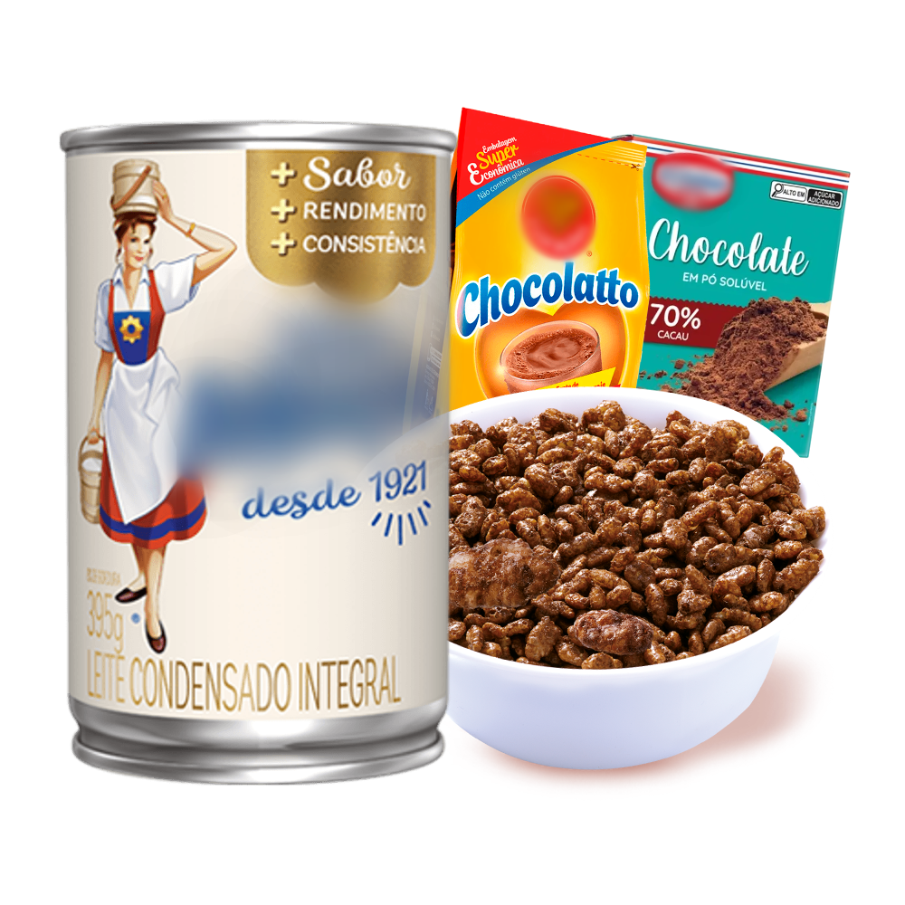
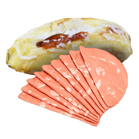
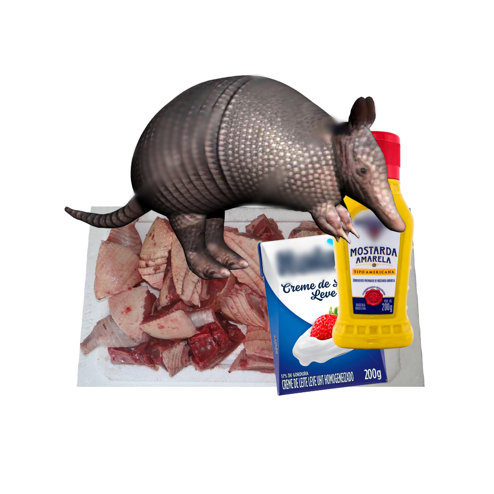

Mistura de Chocolate
- Chocolate/Cacau em Pó
- Leite Condensado
- Cereal Matinal sabor Chocolate
Modo de Preparo

Pão Doce com Mortadela
- 1 Kg de Trigo
- 1 colher (sopa) de sal
- 2 copos (250 ml) de leite morno
- 1/2 copo de óleo
- 2 ovos
- 6 colheres de açúcar
- 3 colheres (sopa) rasa de fermento granulado para pão
- Leite Condensado
- Coco ralado
- Mortadela
Modo de Preparo

Strogonoff de Tatu
- 1,5kg de carne de tatu
- sal a gosto
- 1 cebola picada
- 1 colher de manteiga
- 1/3 copo de mostarda
- 1 copo de creme de leite
- 1 dente de alho picado
- pimenta-do-reino a gosto
- 2 colheres (sopa) de maionese
- 1/2 copo de ketchup
- 1 copo de cogumelos
- batata palha a gosto
Modo de Preparo